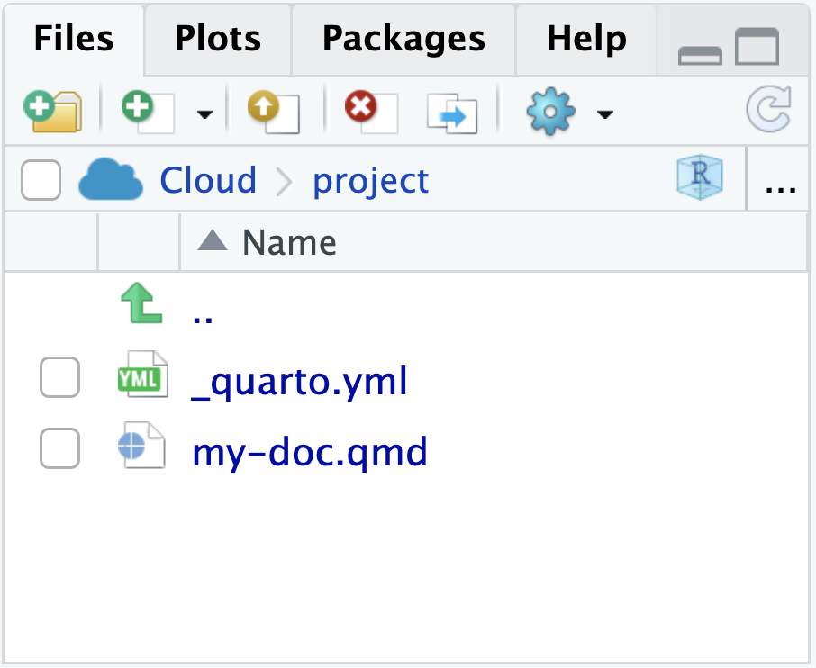
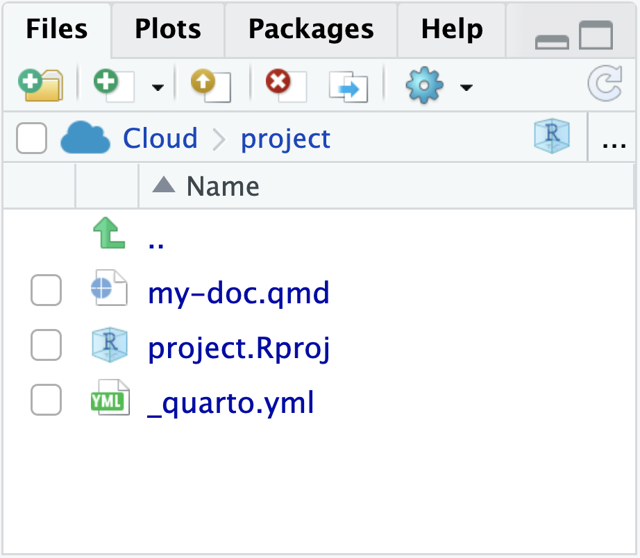

15:00
Websites
From R Markdown to Quarto
Mine Çetinkaya Rundel
Duke University + Posit
Andrew Bray
UC Berkeley
Anatomy of a Quarto project
What defines a Quarto Project?
A Quarto Project is a directory that contains a file called
_quarto.yml.
This is a Quarto Project.

This is not.

_quarto.yml
A YAML file with particular keys and values that Quarto recognizes. Unrecognized keys are ignored.
_quarto.yml
A YAML file with particular keys and values that Quarto recognizes. Unrecognized keys are ignored.
_quarto.yml
project:
type: website
output-dir: _site
resources:
- "/docs/download/_download.json"
- "/docs/download/_prerelease.json"
- "/_redirects"
website:
title: "Quarto"
image: "quarto-dark-bg.jpeg"
favicon: "favicon.png"
google-analytics: "G-FV9Z7SDZ0M"
open-graph: true
twitter-card: true
site-url: https://quarto.org
repo-url: https://github.com/quarto-dev/quarto-web
issue-url: https://github.com/quarto-dev/quarto-cli/issues/new/choose
repo-actions: [edit, issue]
page-navigation: true
bread-crumbs: true
search:
show-item-context: true
type: overlay
algolia:
index-name: prod_QUARTO
application-id: ZPJB5I1QN7
search-only-api-key: 41be6c1e0a7fea4a51b107810facf577
analytics-events: true
show-logo: true
page-footer:
left: |
Proudly supported by
[{fig-alt="Posit" width=65px}](https://posit.co)
center:
- text: "About"
href: about.qmd
- text: "FAQ"
href: docs/faq/index.qmd
- text: "License"
href: license.qmd
- text: "Trademark"
href: trademark.qmd
right:
- icon: twitter
href: https://twitter.com/quarto_pub
aria-label: Quarto Twitter
- icon: github
href: https://github.com/quarto-dev/quarto-cli
aria-label: Quarto GitHub
- icon: rss
href: https://quarto.org/docs/blog/index.xml
aria-label: Quarto Blog RSS
navbar:
background: light
logo: quarto.png
logo-alt: "Quarto logo."
title: false
collapse-below: lg
left:
- text: "Overview"
href: index.qmd
- text: "Get Started"
href: docs/get-started/index.qmd
- text: "Guide"
href: docs/guide/index.qmd
- text: Extensions
href: docs/extensions/index.qmd
- text: "Reference"
href: docs/reference/index.qmd
- text: "Gallery"
href: docs/gallery/index.qmd
- text: "Blog"
href: docs/blog/index.qmd
- text: "Help"
menu:
- text: "Report a Bug"
icon: "bug"
href: "https://github.com/quarto-dev/quarto-cli/issues"
- text: "Ask a Question"
icon: "chat-right-text"
href: "https://github.com/quarto-dev/quarto-cli/discussions"
- text: "FAQ"
icon: "question-circle"
href: docs/faq/index.qmd
tools:
- icon: twitter
href: https://twitter.com/quarto_pub
text: Quarto Twitter
- icon: github
href: https://github.com/quarto-dev/quarto-cli
text: Quarto GitHub
- icon: rss
href: https://quarto.org/docs/blog/index.xml
text: Quarto Blog RSS
sidebar:
- id: get-started
title: "Get Started"
style: "floating"
collapse-level: 2
align: left
contents:
- docs/get-started/index.qmd
- text: "Tutorial: Hello, Quarto"
href: docs/get-started/hello/
- text: "Tutorial: Computations"
href: docs/get-started/computations/
- text: "Tutorial: Authoring"
href: docs/get-started/authoring/
- id: guide
collapse-level: 1
contents:
- section: "Guide"
href: docs/guide/index.qmd
contents:
- section: "Authoring"
contents:
- docs/authoring/markdown-basics.qmd
- docs/authoring/figures.qmd
- docs/authoring/tables.qmd
- docs/authoring/diagrams.qmd
- docs/authoring/videos.qmd
- text: "Jupyter Notebooks"
href: docs/authoring/notebook-embed.qmd
- docs/authoring/callouts.qmd
- docs/authoring/code-annotation.qmd
- docs/authoring/article-layout.qmd
- section: "Scholarly Writing"
contents:
- docs/authoring/front-matter.qmd
- docs/authoring/title-blocks.qmd
- docs/authoring/footnotes-and-citations.qmd
- docs/authoring/cross-references.qmd
- docs/authoring/create-citeable-articles.qmd
- docs/authoring/appendices.qmd
- section: "Computations"
contents:
- docs/computations/python.qmd
- docs/computations/r.qmd
- docs/computations/julia.qmd
- docs/computations/ojs.qmd
- docs/computations/execution-options.qmd
- docs/computations/parameters.qmd
- section: "Tools"
contents:
- section: "JupyterLab"
contents:
- text: "JupyterLab Basics"
href: docs/tools/jupyter-lab.qmd
- text: "JupyterLab Extension"
href: docs/tools/jupyter-lab-extension.qmd
- section: "RStudio IDE"
contents:
- text: "RStudio Basics"
href: docs/tools/rstudio.qmd
- section: "Visual Editor"
href: docs/visual-editor/index.qmd
contents:
- text: Editor Basics
href: docs/visual-editor/index.qmd
- docs/visual-editor/technical.qmd
- docs/visual-editor/content.qmd
- docs/visual-editor/options.qmd
- docs/visual-editor/markdown.qmd
- section: "VS Code"
href: docs/tools/vscode.qmd
contents:
- text: "VS Code Basics"
href: docs/tools/vscode.qmd
- text: "Visual Editor"
href: docs/visual-editor/vscode/index.qmd
- text: "Notebook Editor"
href: docs/tools/vscode-notebook.qmd
- docs/tools/neovim.qmd
- docs/tools/text-editors.qmd
- section: "Documents"
contents:
- section: "HTML"
contents:
- docs/output-formats/html-basics.qmd
- docs/output-formats/html-code.qmd
- docs/output-formats/html-themes.qmd
- docs/output-formats/html-multi-format.qmd
- docs/output-formats/html-publishing.qmd
- section: "PDF"
contents:
- docs/output-formats/pdf-basics.qmd
- docs/output-formats/pdf-engine.qmd
- section: "MS Word"
contents:
- docs/output-formats/ms-word.qmd
- docs/output-formats/ms-word-templates.qmd
- section: "Markdown"
contents:
- docs/output-formats/gfm.qmd
- docs/output-formats/hugo.qmd
- docs/output-formats/docusaurus.qmd
- docs/output-formats/all-formats.qmd
- section: "Presentations"
contents:
- text: "Overview"
href: docs/presentations/index.qmd
- section: docs/presentations/revealjs/index.qmd
contents:
- text: "Reveal Basics"
href: docs/presentations/revealjs/index.qmd
- docs/presentations/revealjs/presenting.qmd
- docs/presentations/revealjs/advanced.qmd
- docs/presentations/revealjs/themes.qmd
- docs/presentations/powerpoint.qmd
- docs/presentations/beamer.qmd
- section: "Websites"
href: docs/websites/website-basics.qmd
contents:
- docs/websites/website-basics.qmd
- docs/websites/website-navigation.qmd
- docs/websites/website-blog.qmd
- docs/websites/website-search.qmd
- docs/websites/website-tools.qmd
- docs/websites/website-about.qmd
- section: "Listing Pages"
href: docs/websites/website-listings.qmd
contents:
- docs/websites/website-listings.qmd
- docs/websites/website-listings-custom.qmd
- section: "Books"
href: docs/books/book-basics.qmd
contents:
- docs/books/book-basics.qmd
- docs/books/book-structure.qmd
- docs/books/book-crossrefs.qmd
- text: "Customizing Output"
href: docs/books/book-output.qmd
- section: "Interactivity"
contents:
- text: "Overview"
href: docs/interactive/index.qmd
- section: docs/interactive/ojs/index.qmd
contents:
- text: "Introduction"
href: docs/interactive/ojs/index.qmd
- docs/interactive/ojs/libraries.qmd
- docs/interactive/ojs/data-sources.qmd
- docs/interactive/ojs/ojs-cells.qmd
- docs/interactive/ojs/shiny.qmd
- docs/interactive/ojs/code-reuse.qmd
- section: "Examples"
contents:
- docs/interactive/ojs/examples/penguins.qmd
- docs/interactive/ojs/examples/sunburst.qmd
- docs/interactive/ojs/examples/arquero.qmd
- docs/interactive/ojs/examples/population.qmd
- docs/interactive/ojs/examples/noaa-co2.qmd
- docs/interactive/ojs/examples/github.qmd
- docs/interactive/ojs/examples/layout.qmd
- section: "Shiny"
contents:
- text: "K-Means"
href: https://jjallaire.shinyapps.io/kmeans-shiny-ojs/
- text: "Binning"
href: https://jjallaire.shinyapps.io/binning-shiny-ojs/
- text: "Data Binding"
href: https://jjallaire.shinyapps.io/data-shiny-ojs/
- text: "Covid Map"
href: https://jjallaire.shinyapps.io/covid19-bicartogram/
- section: docs/interactive/shiny/index.qmd
contents:
- text: "Introduction"
href: docs/interactive/shiny/index.qmd
- docs/interactive/shiny/running.qmd
- docs/interactive/shiny/execution.qmd
- docs/interactive/shiny/resources.qmd
- section: "Examples"
contents:
- text: "Old Faithful"
href: https://jjallaire.shinyapps.io/shiny-old-faithful/
- text: "K-Means"
href: https://jjallaire.shinyapps.io/shiny-k-means/
- text: "Diamonds"
href: https://jjallaire.shinyapps.io/shiny-diamonds/
- section: "Widgets"
contents:
- docs/interactive/widgets/jupyter.qmd
- docs/interactive/widgets/htmlwidgets.qmd
- docs/interactive/layout.qmd
- section: "Publishing"
contents:
- docs/publishing/index.qmd
- docs/publishing/quarto-pub.qmd
- docs/publishing/github-pages.qmd
- docs/publishing/rstudio-connect.qmd
- docs/publishing/netlify.qmd
- docs/publishing/confluence.qmd
- docs/publishing/other.qmd
- text: "Publishing with CI"
href: docs/publishing/ci.qmd
- section: "Projects"
contents:
- docs/projects/quarto-projects.qmd
- docs/projects/code-execution.qmd
- docs/projects/profiles.qmd
- docs/projects/environment.qmd
- docs/projects/scripts.qmd
- docs/projects/virtual-environments.qmd
- section: "Advanced"
contents:
- docs/authoring/includes.qmd
- docs/authoring/variables.qmd
- docs/output-formats/page-layout.qmd
- docs/authoring/language.qmd
- docs/authoring/conditional.qmd
- docs/extensions/nbfilter.qmd
- id: extensions
title: "Extensions"
contents:
- "---"
- section: docs/extensions/index.qmd
contents:
- text: "Shortcodes & Filters"
href: docs/extensions/listing-filters.qmd
- text: "Journal Articles"
href: docs/extensions/listing-journals.qmd
- text: "Custom Formats"
href: docs/extensions/listing-formats.qmd
- text: "Revealjs Extensions"
href: docs/extensions/listing-revealjs.qmd
- docs/extensions/managing.qmd
- "---"
- section: docs/extensions/creating.qmd
contents:
- text: "Overview"
href: docs/extensions/creating.qmd
- docs/extensions/lua.qmd
- docs/extensions/lua-api.qmd
- text: "Distribution"
href: docs/extensions/distributing.qmd
- "---"
- text: "Shortcodes"
href: docs/extensions/shortcodes.qmd
- text: "Filters"
href: docs/extensions/filters.qmd
- section: "Journal Articles"
href: docs/journals/formats.qmd
contents:
- docs/journals/formats.qmd
- docs/journals/templates.qmd
- docs/journals/authors.qmd
- docs/extensions/formats.qmd
- docs/extensions/revealjs.qmd
- docs/extensions/project-types.qmd
- docs/extensions/starter-templates.qmd
- id: manuscripts
title: "Manuscripts"
style: "floating"
collapse-level: 2
align: left
contents:
- text: Manuscripts Overview
href: docs/manuscripts/index.qmd
- text: "Authoring Manuscripts"
contents:
- text: Jupyter Lab
href: docs/manuscripts/authoring/jupyterlab.qmd
- text: VS Code
href: docs/manuscripts/authoring/vscode.qmd
- text: RStudio
href: docs/manuscripts/authoring/rstudio.qmd
- text: "Publishing Manuscripts"
href: docs/manuscripts/publishing.qmd
- text: "Next Steps"
href: docs/manuscripts/next-steps.qmd
- text: "---"
- text: "Manuscript Components"
href: docs/manuscripts/components.qmd
- id: reference
title: "Reference"
collapse-level: 3
contents:
- section: "Reference"
href: docs/reference/index.qmd
contents:
- section: "Formats"
contents:
- text: "HTML"
href: docs/reference/formats/html.qmd
- text: "PDF"
href: docs/reference/formats/pdf.qmd
- text: "MS Word"
href: docs/reference/formats/docx.qmd
- text: "OpenOffice"
href: docs/reference/formats/odt.qmd
- text: "ePub"
href: docs/reference/formats/epub.qmd
- section: "Presentations"
contents:
- text: "Revealjs"
href: docs/reference/formats/presentations/revealjs.qmd
- text: "PowerPoint"
href: docs/reference/formats/presentations/pptx.qmd
- text: "Beamer"
href: docs/reference/formats/presentations/beamer.qmd
- section: "Markdown"
contents:
- text: "GitHub"
href: docs/reference/formats/markdown/gfm.qmd
- text: "CommonMark"
href: docs/reference/formats/markdown/commonmark.qmd
- text: "Markua"
href: docs/reference/formats/markdown/markua.qmd
- section: "Wikis"
contents:
- text: "MediaWiki"
href: docs/reference/formats/wiki/mediawiki.qmd
- text: "DokuWiki"
href: docs/reference/formats/wiki/dokuwiki.qmd
- text: "ZimWiki"
href: docs/reference/formats/wiki/zimwiki.qmd
- text: "Jira Wiki"
href: docs/reference/formats/wiki/jira.qmd
- text: "XWiki"
href: docs/reference/formats/wiki/xwiki.qmd
- section: "More Formats"
contents:
- text: "JATS"
href: docs/reference/formats/jats.qmd
- text: "Jupyter"
href: docs/reference/formats/ipynb.qmd
- text: "ConTeXt"
href: docs/reference/formats/context.qmd
- text: "RTF"
href: docs/reference/formats/rtf.qmd
- text: "reST"
href: docs/reference/formats/rst.qmd
- text: "AsciiDoc"
href: docs/reference/formats/asciidoc.qmd
- text: "Org-Mode"
href: docs/reference/formats/org.qmd
- text: "Muse"
href: docs/reference/formats/muse.qmd
- text: "GNU TexInfo"
href: docs/reference/formats/texinfo.qmd
- text: "Groff Man Page"
href: docs/reference/formats/man.qmd
- text: "Groff Manuscript"
href: docs/reference/formats/ms.qmd
- text: "Haddock markup"
href: docs/reference/formats/haddock.qmd
- text: "OPML"
href: docs/reference/formats/opml.qmd
- text: "Textile"
href: docs/reference/formats/textile.qmd
- text: "DocBook"
href: docs/reference/formats/docbook.qmd
- text: "InDesign"
href: docs/reference/formats/icml.qmd
- text: "TEI Simple"
href: docs/reference/formats/tei.qmd
- text: "FictionBook"
href: docs/reference/formats/fb2.qmd
- section: "Code Cells"
href: docs/reference/cells/index.qmd
contents:
- text: "Jupyter"
href: docs/reference/cells/cells-jupyter.qmd
- text: "Knitr"
href: docs/reference/cells/cells-knitr.qmd
- text: "Observable"
href: docs/reference/cells/cells-ojs.qmd
- section: "Projects"
contents:
- text: "Options"
href: docs/reference/projects/options.qmd
- text: "Websites"
href: docs/reference/projects/websites.qmd
- text: "Books"
href: docs/reference/projects/books.qmd
- section: "More"
contents:
- text: "Dates"
href: docs/reference/dates.qmd
- text: "Globs"
href: docs/reference/globs.qmd
- text: "Citations"
href: docs/reference/metadata/citation.qmd
- id: prerelease
title: "Quarto 1.3"
contents:
- section: "Highlights"
href: docs/prerelease/1.3/index.qmd
contents:
- text: "Confluence Publishing"
href: docs/publishing/confluence.qmd
- text: "Multi-Format"
href: docs/output-formats/html-multi-format.qmd
- text: "Cell Embedding"
href: docs/authoring/notebook-embed.qmd
- text: "Grid Customization"
href: docs/output-formats/page-layout.qmd#grid-customization
- text: "Code Annotation"
href: docs/authoring/code-annotation.qmd
- section: "Quarto AST"
href: docs/prerelease/1.3/ast.qmd
contents:
- text: Callouts
href: docs/prerelease/1.3/custom-ast-nodes/callout.qmd
- text: Tabsets
href: docs/prerelease/1.3/custom-ast-nodes/tabset.qmd
- text: Conditional Blocks
href: docs/prerelease/1.3/custom-ast-nodes/conditional-block.qmd
- text: "Mermaid Theming"
href: docs/authoring/diagrams.qmd#mermaid-theming
- text: "PDF Images"
href: docs/prerelease/1.3/pdf.qmd
- text: "`kbd` Shortcode"
href: docs/authoring/markdown-basics.qmd#keyboard-shortcuts
bibliography: references.bib
format:
html:
toc: true
theme:
light: [cosmo, theme.scss]
code-copy: true
code-overflow: wrap
css: styles.css
include-after-body: js.html
grid:
sidebar-width: 250px
body-width: 900px
margin-width: 300px
filters:
- filters/tools-tabset.lua
freeze: true
editor: visual
profile:
group:
- [prerelease,rc]Quarto Project vs RStudio Project
- Quarto Projects determine how
quarto render,quarto previewandquarto publishwork when run inside the directory. - RStudio Projects store configuration info for the IDE when working from the directory.
- A directory can have one or both!

Quarto projects
Quarto projects have a
_quarto.ymlfileThe
typefield in this file indicates the type of project:default: Collection of documentswebsite: Websites (and blogs)book: Booksmanuscript: Manuscripts (Quarto 1.4+)
Quarto websites
Websites are essentially
format: html+ a Quarto Project fileBut a website is different than
format: htmlin that it has multiple pagesWebsites are our first exploration into Quarto Projects
Websites and books are very similar in that they associate multiple pages/resources into a connected resource
Our turn
Let’s build a website together from all of the documents we’ve created so far and highlight the following features of Quarto websites:
_quarto.ymlindex.qmd/ landing page / change landing pageNavigation
Freeze
Themes and dark theme toggle
Publishing to QuartoPub
An aspect of the workshop webpage that you fancy?
Your turn
Pick up where we left off and
- Add an about page to the navigation and customize it.
- Change your theme.
- Add a cross-reference to a figure on the same page as the reference.
- Add a cross-reference to a figure on a different page as the reference.
Our turn
Let’s now add a blog component to our website.
Add a folder called
postsand create a few minimal blog post entries and collect these from a blog page using the listings feature.Change the style of listings.
Computations
When should code be re-run?
You might have a reason to re-run all code in a Quarto website (every single chunk in every single document) every time you render the website.
But, chances are, that’s not what you want.
Just playing around styling – you probably don’t want to run the code again
Changed some code in a document – you probably want to re-run the code in that document, but not necessarily others
Made a big change affecting computations on many or all pages – you probably want to re-run all code
freezeandcacheoptions give you fine control over these decisions
Freeze
- The
freezeoption controls when/if computational documents be re-rendered during a global project render:
The
freezeoption is typically added to a_metadata.ymlfile within a specific directory, affecting all files in that directory.For blogs, set
feezein_metadata.ymlat the root of thepostsdirectory.You can have it only within specific subdirectories for more complex sites.
Cache
Cache stores the results of computations for a specific file.
Cache invalidation is triggered by changes in chunk source code (or other cache attributes you’ve defined).
cachecan also be set at the chunk level. Consider using the cache for computationally expensive chunks.
Freeze vs. cache
Freeze option is typically set
for the whole website in
_quarto.yml, orfor files within a directory in
_metadata.ymlin that directory
- Cache option is typically set for a given file or for individual chunk(s) in a file.
or
Publishing
QuartoPub
Quarto Pub is a free publishing service for content created with Quarto. It is ideal for blogs, course or project websites, books, presentations, and personal hobby sites.
Publish with
quarto publish:
- Gain a
_publish.ymlthat is safe to check into version control.
Other venues
- GitHub Pages
- Posit Connect
- Netlify
- Confluence
- More venues
Wrap up
Learn more
Questions
Any questions / anything you’d like to review before we wrap up this module?